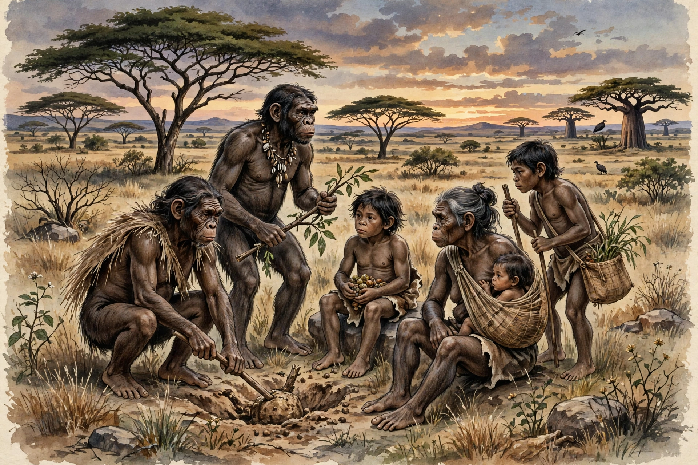

Evolutionary psychology is a theoretical approach in psychology that examines human behaviour and cognition from a modern evolutionary perspective. It seeks to identify psychological adaptations - evolved mechanisms of the mind - that solved recurrent problems in ancestral environments, such as mate selection, kin recognition, cooperation, status competition and predator avoidance. The field was popularised in the 1990s by scholars including Leda Cosmides, John Tooby, David Buss, Steven Pinker and Martin Daly and Margo Wilson.

Evolutionary psychologists study adaptations to ancestral environments.
| Evolutionary psychology | |
| Key figures | Leda Cosmides, John Tooby, David Buss, Steven Pinker, Martin Daly, Margo Wilson |
|---|---|
| Key texts | The Adapted Mind (1992); The Evolution of Desire (1994) |
| Core concepts | Adaptation, domain specificity, environment of evolutionary adaptedness, inclusive fitness |
| Related fields | Human behavioural ecology, sociobiology, cognitive psychology |
Evolutionary psychology builds on Darwin's theory of natural and sexual selection, on Hamilton's inclusive fitness theory, Trivers's work on parental investment and reciprocal altruism, and on the cognitive revolution's model of the mind as an information-processing system. Cosmides and Tooby argued that the mind consists of many domain-specific mechanisms shaped by selection, rather than a few general-purpose learning rules. Because adaptations reflect the environments in which they evolved - the "environment of evolutionary adaptedness", largely Pleistocene hunter-gatherer conditions - mismatches with modern life may explain some contemporary behaviour and mental health problems.
Major research programmes cover mating strategies and jealousy, kin altruism and cheater detection (e.g., performance on the Wason selection task), disgust and disease avoidance, landscape and food preferences, aggression and homicide (Daly and Wilson), and the evolution of language and theory of mind (Pinker).
Critics charge that some evolutionary-psychological hypotheses are hard to test or falsify, that researchers can construct post-hoc "just-so stories", that ancestral environments are imperfectly known, and that findings on sex differences can be overgeneralised. Defenders reply that the framework generates testable predictions and integrates psychology with biology, and the field continues to develop alongside behavioural genetics and human behavioural ecology.